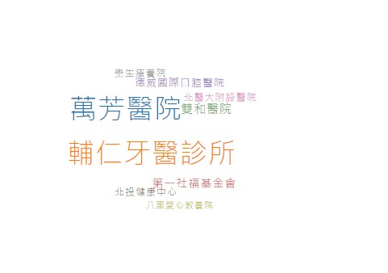

-

-
應完成 2項 / 未完成 0項已完成
- 
-

-
目前已完成3項 - E1E2E3E4E5
-
語測基礎值(LPF)
A2 B1 B2 C1 單
項
能
力聽力 B2 閱讀 B1 口說 B1 寫作 C1 -
構成項目 達成狀況 實踐領導書院 100% 卓越領導書院 52% 經營領導書院 17% -
構成項目 參與次數 成就(年級排名) 社團參與 3 38.88% 社區服務/社會服務 12 10.88% 品德教育 0 100% 法治教育 0 100 生命教育 1 88.55% 就業競爭力 3 57.22%
連續登入獎勵
恭喜您! 今日獲得 2 點!